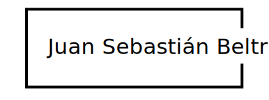

Resumen curricular
Juan Sebastián Beltrán
9 de noviembre de 1997, Bogotá - Colombia
Experiencia
Video - Programación con arduino - Festiva Estéreo Picnic
Audio - Musica - The girl/Hellberg
Información de perfil
- Perfil: Diseñador, Desarrollador Web
- Idiomas: Español, Ingles, Alemán basico
Derechos reservados
- Email: js.beltran12@uniandes.edu.co
- Telefono: 3008775220
- Dirección: Carrera 47a # 22-98 apto. 201